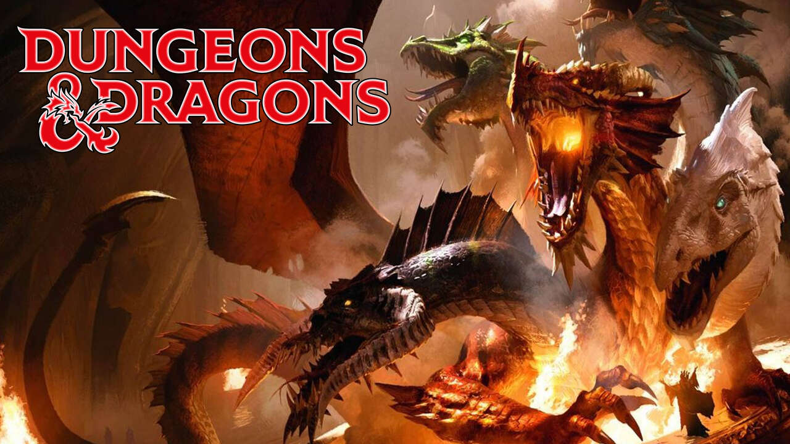
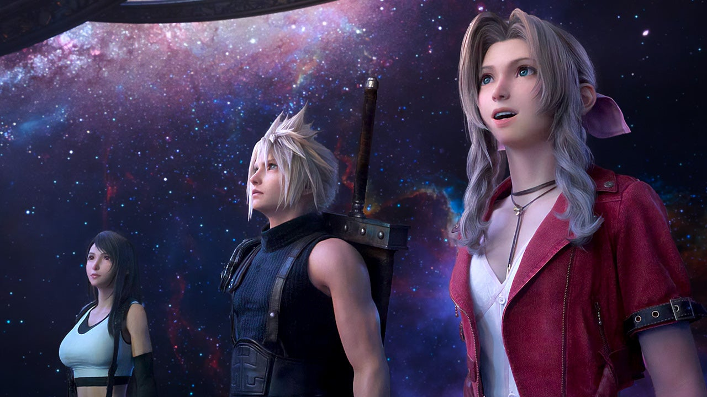

Popularmente conocidos como RPG, este género está basado en los juegos de rol de mesa. Por lo general, el jugador inicia una partida en la que escoge un equipo de personajes, cada uno con sus propias características y habilidades, expresadas en forma de datos estadísticos (salud, magia, ataque, defensa, sabiduría). El juego en general se divide en explorar pueblos, en donde el equipo puede abastacerse y comprar distintos objetos; y en explorar mazmorras o calabozos, que son escenarios laberínticos repletos de enemigos en donde los personajes combaten para ganar experiencia y dinero y así se van fortaleciendo.
Este es el subgénero mas clásico de juegos de rol. Se caracterizan por una forma de juego no lineal basada en la exploración e interacción con personajes y el uso de numerosas estadísticas para determinar las capacidades de cada personaje. En estos juegos el jugador puede crear su grupo de personajes a gusto y el objetivo se basa en cumplir distintas misiones que incluyen ingresar en mazmorras laberínticas repletas de monstruos. Es muy común que los más antiguos usen una perspectiva en primera persona.
Este tipo de RPGs se caracterizan por el predominio de una historia muy elaborada que define el rumbo a seguir. El transcurso del juego normalmente se centra en un protagonista que comienza siendo muy débil, pero que se va fortaleciendo y va sumando compañeros a lo largo de la aventura. Los personajes a controlar están predefinidos y cada uno juega un papel en la historia, apareciendo en distintos tramos del juego. Tradicionalmente utilizan un sistema de combate por turnos. Ejemplos: Dragon Quest, Final Fantasy.
